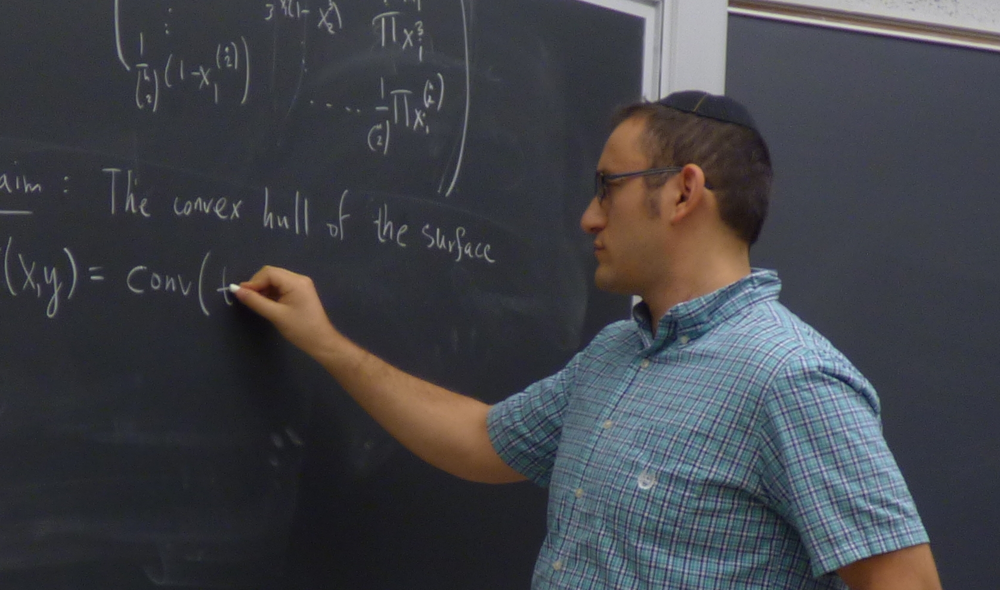

Course: MAS 6217 — Number Theory and Cryptography
Department: Department of Mathematical Sciences
Credit Hours: 3
CRN: 14850
Prerequisites: Enrolled in the M.S.T. program or permission of instructor
Format: Fully online
Instructor: Zvi Rosen
Email address: rosenz@fau.edu
Office: Science Building (SE-43), Room 224
Office Hours: Tuesday 3:00–4:00 pm or by appointment
Video Conferencing: Zoom (link)
This course provides mathematical background in number theory and cryptography for high school teachers. Topics include congruences and modular arithmetic, finite fields, public-key cryptography (RSA), primality testing, and integer factorization. The course emphasizes conceptual understanding and classroom-relevant applications and is not intended for Ph.D. students in mathematics.
Most course business will be handled on the Canvas site. The course is organized into weekly modules with posted due dates.